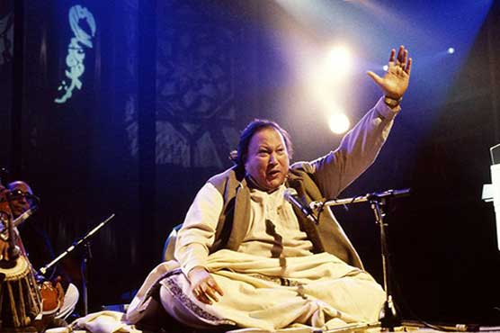

Nusrat Fateh Ali Khan (13 October 1948 – 16 August 1997) was a Pakistani musician,
primarily a singer of Qawwali, the devotional music of the Sufis.
Widely considered one of the greatest voices ever recorded,
he possessed an extraordinary range of vocal abilities and
could perform at a high level of intensity for several hours.
Extending the 600-year old Qawwali tradition of his family,
Khan is widely credited with introducing Qawwali music to international audiences.
He is popularly known as "Shahenshah-e-Qawwali", meaning "The King of Qawwali".
Born in Faisalabad, Khan had his first public performance at the age of 16, at his father's chelum.
He became the head of the family qawwali party in 1971.
He was signed by Oriental Star Agencies, Birmingham, England in the early 1980s.
Khan went on to release movie scores and albums in Europe, India, Japan, Pakistan and the US.
He engaged in collaborations and experiments with Western artists,
becoming a well-known world music artist. He toured extensively, performing in over 40 countries.